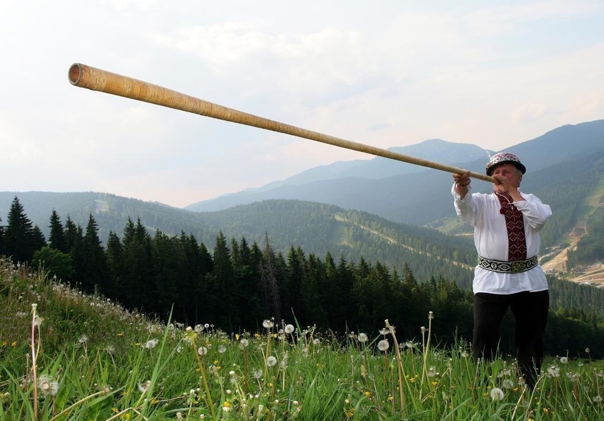

Українські Карпати — це справжній рай для поціновувачів природи та активного відпочинку. Влітку сюди приїжджають заради піших походів на Говерлу, прогулянок полонинами та збирання лісових ягід і грибів. Чисте гірське повітря та швидкі річки створюють ідеальні умови для відновлення сил.
Взимку карпатські курорти перетворюються на центр гірськолижного спорту. Окрім катання на лижах чи сноуборді, туристи можуть ознайомитися з автентичною гуцульською кухнею, місцевими ремеслами та стародавніми дерев’яними церквами.